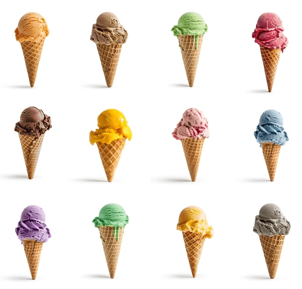

NUESTRA HISTORIA |
| En la atribulada ciudad de Santiago surgió la idea de abrir una pastelería como un camino a seguir. Después de arduo trabajo y dedicación nació Cielo Cremoso, un pequeño lugar que produce helados caseros con sabores frescos como mango y chocolate. Pronto se convirtió en un espacio especiale para los citadinos que buscaban momentos de frescura y alegría. |  |